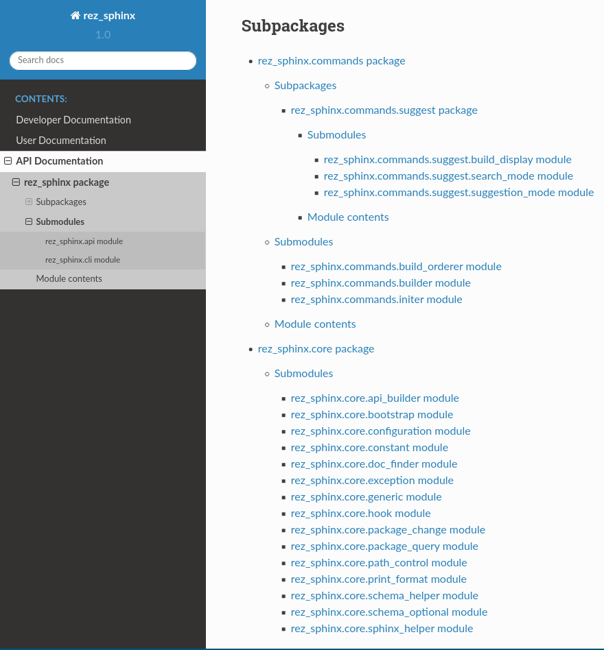
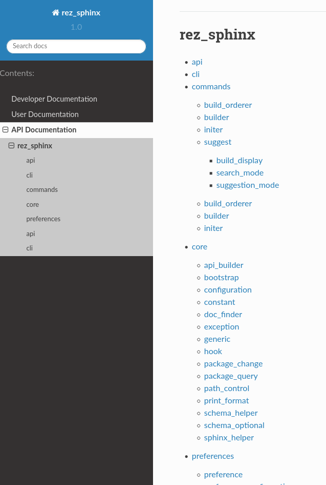

rez_sphinx build¶
This parent command includes building documentation but also things like inspecting the built documentation and any other possible future commands.
Another related command, rez_sphinx view sphinx-config, is very useful for debugging builds.
rez_sphinx build run¶
This command takes documentation built using rez_sphinx init and generates .html. The basic steps go as follows
- Check that all init_options.default_files have hand-written documentation
This check is disabled via init_options.check_default_files.
- As long as
--no-apidocisn’t specified and API generation is allowed Auto-create .rst files using
sphinx-apidoc.Add the root modules.rst to the master index.rst file.
- As long as
Run
sphinx-build
The documentation is either available in {root}/documentation/build (the
default location) or {root}/build/documentation if you passed you passed
rez_sphinx init --quickstart-arguments="--no-sep".
A note about Python 2 / 3¶
The default toctree generated for the API documentation is super ugly.
Starting from Sphinx 2.2+, which requires Python 3, the same toctree looks like this:
So in short, if you want a pretty toctree, run User Documentation in Python 3. If you prefer the default tree, this behavior can be disabled using sphinx-apidoc.allow_apidoc_templates.